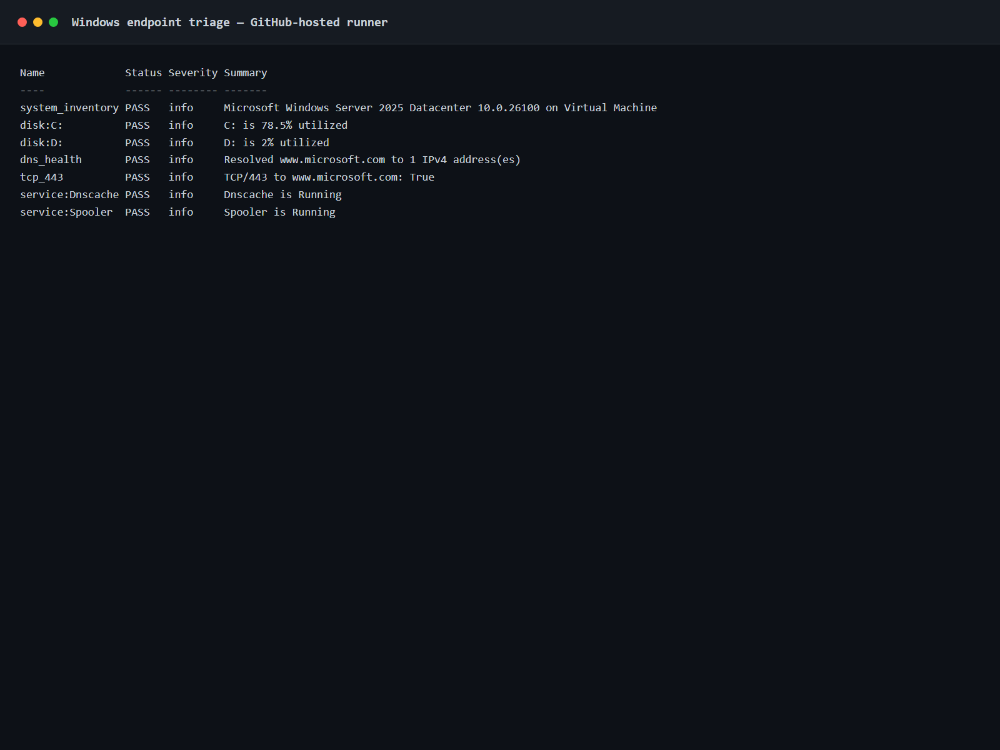
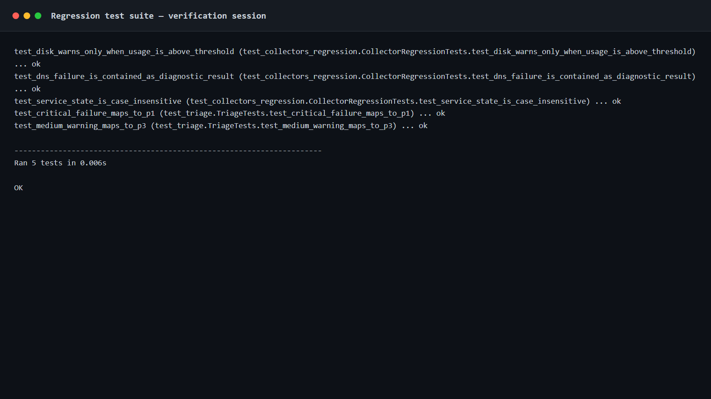

Endpoint troubleshooting with evidence before action.
A controlled IT support lab for collecting endpoint evidence, isolating DNS/TCP/service faults, scoring incidents, documenting escalation, and validating automation on an actual GitHub-hosted Windows Server runner.
Actual Windows execution, captured by CI.
The evidence below comes from GitHub Actions run 36561149955. The workflow executed the PowerShell triage script and regression tests, built evidence pages from their raw output, and captured these PNGs with Playwright.


Built around repeatable support work.
Collect first
System identity, disk pressure, DNS resolution, TCP reachability, Windows service state, and recent Event Log errors are captured before remediation.
Change safely
Network remediation is separated from diagnostics and supports PowerShell -WhatIf/ShouldProcess behavior.
Escalate with context
Runbooks and an escalation matrix emphasize timestamps, scope, exact failures, recent changes, actions attempted, and current workaround.
Failures are kept visible.
The project history includes defects found during testing and Windows verification instead of presenting only a final polished state.
Disk threshold logic, DNS exception containment, and service-state normalization were reproduced with tests and repaired in later commits.
A PowerShell interpolation error appeared only when the triage script ran on the Windows hosted runner. The CI log identified the exact line and the script was corrected.
A Python template bug and an unreliable native browser capture were fixed; the final implementation uses Playwright and successfully commits verified evidence automatically.